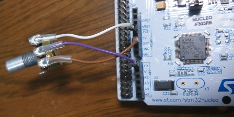
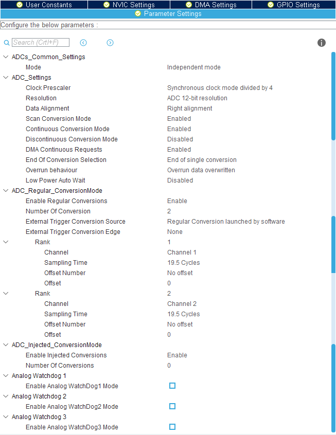
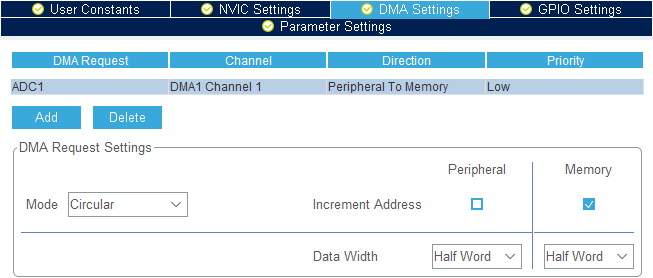
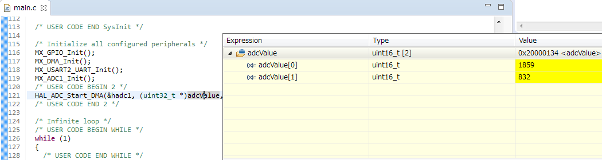

STM32 NucleoボードのADCを使う
2018年12月14日 カテゴリー：STM32 エフェクター

前回Lチカを行ったNucleoボードですが、今度はエフェクターのパラメータ変更を想定してADC（アナログ・デジタル・コンバータ）を使ってみます。アナログ電圧値をデジタル数値に変換することにより、ポット（可変抵抗）をどれだけ回転させたか取得できます。
実際の運用ではバックグラウンドで自動的に複数ポットの値を取得し続ける必要が出てくると思いますので、DMA（Direct Memory Access）を利用します。DMAとは、CPUを介さずデータ転送できるというよくわからないけど便利な機能らしいです。
Nucleoボード（NUCLEO-F303RE）とポットとの接続は下記の通りです。ポットは抵抗値5kΩ以上でBカーブのものがよいでしょう。
ポットの1番ピン→NucleoボードのGND
ポットの2番ピン→NucleoボードのA0
ポットの3番ピン→Nucleoボードの3V3（5Vと間違えないように！）
ポットは1つですが、2チャネル分セットアップしていきます。ソフトの基本操作については前回記事をご参照ください。変更する箇所を記載していますが、ソフトのバージョンによりデフォルト値が違うかもしれませんので、スクリーンショットも確認した方がよいだろうと思います。
＜STM32CubeMX（5.0.0） Pinout & Configurationタブ＞
左側列のAnalog→ADC1を開く
・中央列上側 Mode
IN1 : IN1 Single-ended
IN2 : IN2 Single-ended
→右側IC画像の14番ピン（PA0）と15番ピン（PA1）が自動的に切り替わる
・中央列下側 Configuration→Parameter Settingsタブ

Clock Prescaler : Syncronous clock mode divided by 4
Continuous Conversion Mode : Enabled
DMA Continous Request : Enabled
Number Of Conversion : 2
→Scan Conversion Mode がEnableに切り替わり、Rank 2 が追加される
Rank 1 Sampling Time : 19.5 Cycles
Rank 2 Channel : Channel 2
Rank 2 Sampling Time : 19.5 Cycles
・中央列下側 Configuration→DMA Settingsタブ

Addボタンで行が追加される
DMA Request : ADC1
Mode : Circular ※Normalの場合ADC値取得が1回だけとなる
＜TrueSTUDIO（9.1.0）＞
main.cに2箇所追加記載する
/* USER CODE BEGIN 0 */の下 ADC値を格納する配列を定義
uint16_t adcValue[2];
/* USER CODE BEGIN 2 */の下 ADC値取得開始
HAL_ADC_Start_DMA(&hadc1, (uint32_t *)adcValue, 2);
デバッグ画面で一時停止中adcValueにマウスカーソルを合わせると、取得したADC値が確認できます。

ポットのシャフトを動かし、再開と一時停止をするとadcValue[0]が0～4095の間で変化します。ポットの2番ピンをNucleoボードのA1につないだ場合は、adcValue[1]が変化します。細かい設定はまた別の機会に見直すとして、とりあえず値を取得できているようなのでOKでしょう。
＜補足情報＞
・設定したチャネル数のADC値取得後に何かしらの処理を行う場合、/* USER CODE BEGIN 4 */の下に以下のように記載する
void HAL_ADC_ConvCpltCallback(ADC_HandleTypeDef* hadc){
// 処理
}・ADC値取得を中止する場合は下記関数を使う
HAL_ADC_Stop_DMA(&hadc1);
＜参考ページ＞
・STM32でADCをやってみる2（DMAを使ったレギュラ変換） - ガレスタさんのDIY日記
・STM32マイコンでADCを使ってみる話 - JP7FKFの備忘録